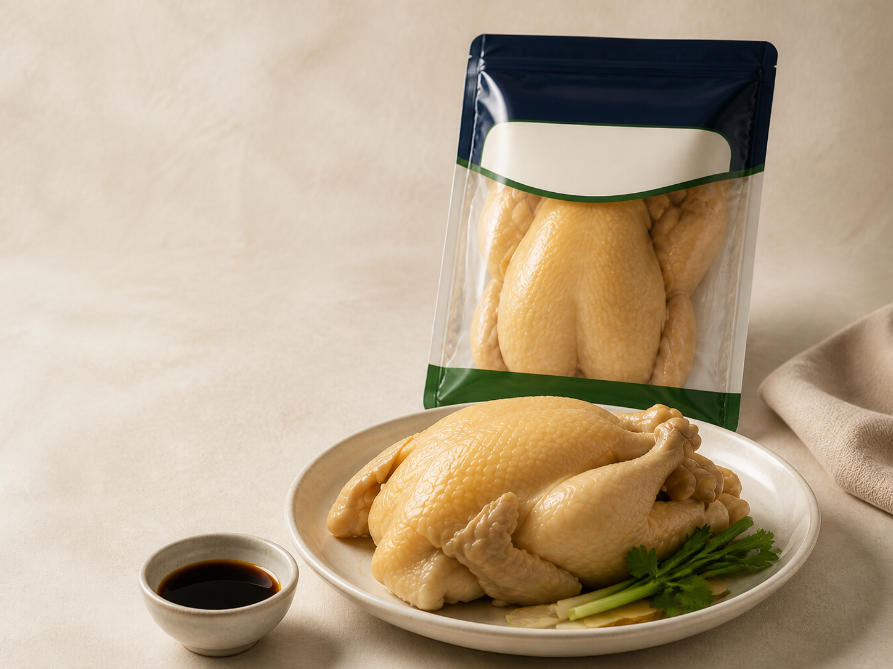
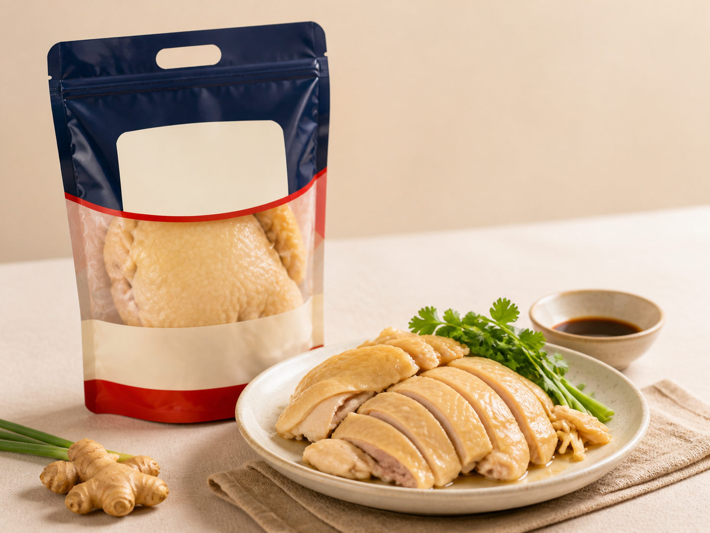

Food Lab 與新品整理
按市場需求、客戶菜單、產品方向及門店條件整理新品與合作問題。
Food · Products · Business
由食材本味、經典熟食，到 Food Lab 研發與商業合作，DELIGHTS 以產品為起點，建立更完整的食品體驗。
How We Work
我們由產品開始：Food Lab 先整理菜式、風味、包裝與市場定位，再按已確認的供應、保存與交付條件討論下一步。
按市場需求、客戶菜單、產品方向及門店條件整理新品與合作問題。
由原料、熟製品到零售 SKU，整理成易報價、易落地、易複製的產品分類。
Food Lab、OEM、供應與跨境合作按產品、目的地與可提供資料逐項確認。
Quality & Origin
公開頁面只保留可核實的產品與流程資訊；需要批次、文件或供應細節，歡迎直接向我們查詢。
以簡化流程呈現產品來源、保存與出品重點；完整文件與批次查詢按可提供資料處理。
從產品方向、配方、包裝規格到合作流程，按項目整理可落地的方案。
Product Entry Points
公開產品頁面先聚焦清遠御品與白玉浸雞；其他 Food Lab、OEM 與供應方案集中於 For Business。

清遠雞產品方向，保留原味與使用彈性。
DELIGHTS Origin 清遠御品，以清遠雞產品方向為核心；詳細規格、保存與供應安排按實際產品資料提供。

經典熟食產品方向，適合日常餐飲與零售場景。
白玉浸雞以經典熟食產品方向為核心；保存、規格與供應資料按產品頁及實際查詢提供。
Ready To Start
告訴我們你的產品方向、用量與交付地點，我們會按查詢目的回覆。